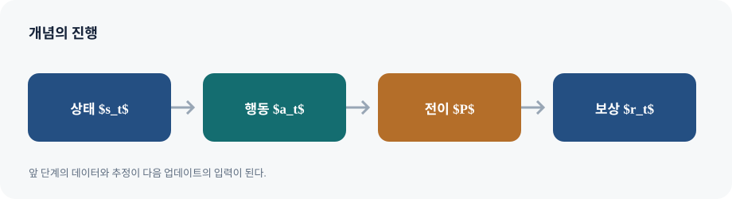

Markov decision process(MDP)는 강화학습 문제를 \((\mathcal S,\mathcal A,P,r,\gamma,
ho_0)\)로 표현한다. 상태 \(s\)와 행동 \(a\), 전이확률 \(P(s'\mid s,a)\), 보상 \(r(s,a)\), 할인율 \(\gamma\), 초기 상태 분포 \(
ho_0\)가 환경과 목표를 정의한다. 정책 \(\pi(a\mid s)\)는 에이전트의 행동 규칙이다. MDP의 Markov 가정은 현재 상태를 알면 미래가 과거 전체에 추가로 의존하지 않는다는 조건이다. 관측만으로 충분한 상태를 만들지 못하면 관측 기반 정책이나 belief state가 필요하다.
보상의 합을 최적화한다고 해서 매 시점의 보상을 탐욕적으로 고르면 되는 것은 아니다. 현재 행동은 전이확률을 바꾸어 미래 보상의 분포까지 바꾸므로 기대 누적 보상을 비교해야 한다. 유한 지평에서는 종료 시점까지 합하고, 무한 지평에서는 할인합 \(G_t=\sum_{k=0}^{\infty}\gamma^k r_{t+k}\)를 자주 쓴다. \(\gamma\)가 1에 가까울수록 먼 미래를 더 중시하지만 추정 난도와 분산도 커진다.
기대값에서 Bellman 식으로. 상태가치의 정의는 \(V^\pi(s)=\mathbb E_\pi[G_t\mid s_t=s]\)다. 반환을 첫 보상과 나머지 반환으로 분리하면 \(G_t=r_t+\gamma G_{t+1}\)이고, 조건부 기대값의 선형성으로
같은 논리에서 \(Q^\pi(s,a)=\mathbb E[r+\gamma V^\pi(s')]\)이며 \(V^\pi(s)=\mathbb E_{a\sim\pi}[Q^\pi(s,a)]\)다. 최적 가치에서는 정책의 평균 대신 가능한 행동 중 최대를 취해 Bellman optimality equation을 얻는다. 예시의 숫자를 계산할 때는 전이확률의 합이 1인지, terminal state 이후 가치를 0으로 두었는지 확인한다.
표지에서 이 강의의 주제를 확인하고, 뒤따르는 예시가 어떤 의사결정 문제를 설명하는지 질문을 세워 둡니다.
복습과 문제 형식화
행동·상태를 정했으면 시간 순서와 보상이 언제 관측되는지 고정한다. 같은 이름의 상태라도 환경을 예측하는 데 과거 정보가 필요하면 Markov state가 아니다. 로봇의 위치·속도처럼 필요한 이력을 상태에 포함하거나 확률적 belief로 요약할 수 있다.
02-1 / 02
Plan for today
슬라이드 02
오늘의 목차는 개념의 순서를 보여 줍니다. 각 항목을 읽을 때 앞에서 배운 도구가 다음 알고리즘의 어떤 약점을 해결하는지 연결합니다.
02-1 / 03
Grading policy
슬라이드 03
정책은 상태에서 행동 분포를 지정합니다. 결정론 정책은 한 행동을 택하고 확률론 정책은 탐색 및 여러 동작 모드를 표현합니다.
02-1 / 04
Midterm and ffinal exams (30% each)
슬라이드 04
이 슬라이드의 Midterm and ffinal exams (30% each)를 복습과 문제 형식화 맥락에서 읽는다. 그림의 입력·행동·결과를 구분하고, 식이 있다면 각 항이 어떤 가정과 학습 신호를 나타내는지 설명과 대조한다.
02-1 / 05
Attendance (3%)
슬라이드 05
이 슬라이드의 Attendance (3%)를 복습과 문제 형식화 맥락에서 읽는다. 그림의 입력·행동·결과를 구분하고, 식이 있다면 각 항이 어떤 가정과 학습 신호를 나타내는지 설명과 대조한다.

MDP와 순차적 의사결정의 핵심 구조
02-1 / 06
Participation (2%)
슬라이드 06
이 슬라이드의 Participation (2%)를 복습과 문제 형식화 맥락에서 읽는다. 그림의 입력·행동·결과를 구분하고, 식이 있다면 각 항이 어떤 가정과 학습 신호를 나타내는지 설명과 대조한다.
02-1 / 07
Information & Resources
슬라이드 07
이 슬라이드의 Information & Resources를 복습과 문제 형식화 맥락에서 읽는다. 그림의 입력·행동·결과를 구분하고, 식이 있다면 각 항이 어떤 가정과 학습 신호를 나타내는지 설명과 대조한다.
02-1 / 08
References
슬라이드 08
이 슬라이드의 References를 복습과 문제 형식화 맥락에서 읽는다. 그림의 입력·행동·결과를 구분하고, 식이 있다면 각 항이 어떤 가정과 학습 신호를 나타내는지 설명과 대조한다.
02-1 / 09
Plan for today
슬라이드 09
오늘의 목차는 개념의 순서를 보여 줍니다. 각 항목을 읽을 때 앞에서 배운 도구가 다음 알고리즘의 어떤 약점을 해결하는지 연결합니다.
02-1 / 10
Decision making problem
슬라이드 10
이 슬라이드의 Decision making problem를 복습과 문제 형식화 맥락에서 읽는다. 그림의 입력·행동·결과를 구분하고, 식이 있다면 각 항이 어떤 가정과 학습 신호를 나타내는지 설명과 대조한다.
02-1 / 11
Behavioral cloning (BC)
슬라이드 11
이 슬라이드의 Behavioral cloning (BC)를 복습과 문제 형식화 맥락에서 읽는다. 그림의 입력·행동·결과를 구분하고, 식이 있다면 각 항이 어떤 가정과 학습 신호를 나타내는지 설명과 대조한다.
02-1 / 12
What can go wrong in imitation learning?
슬라이드 12
이 슬라이드의 What can go wrong in imitation learning?를 복습과 문제 형식화 맥락에서 읽는다. 그림의 입력·행동·결과를 구분하고, 식이 있다면 각 항이 어떤 가정과 학습 신호를 나타내는지 설명과 대조한다.
02-1 / 13
Addressing Compounding Errors with DAgger
슬라이드 13
이 슬라이드의 Addressing Compounding Errors with DAgger를 복습과 문제 형식화 맥락에서 읽는다. 그림의 입력·행동·결과를 구분하고, 식이 있다면 각 항이 어떤 가정과 학습 신호를 나타내는지 설명과 대조한다.
02-1 / 14
Addressing Compounding Errors with DAgger
슬라이드 14
이 슬라이드의 Addressing Compounding Errors with DAgger를 복습과 문제 형식화 맥락에서 읽는다. 그림의 입력·행동·결과를 구분하고, 식이 있다면 각 항이 어떤 가정과 학습 신호를 나타내는지 설명과 대조한다.
02-1 / 15
Plan for today
슬라이드 15
오늘의 목차는 개념의 순서를 보여 줍니다. 각 항목을 읽을 때 앞에서 배운 도구가 다음 알고리즘의 어떤 약점을 해결하는지 연결합니다.
02-1 / 16
What is reinforcement learning?
슬라이드 16
이 슬라이드의 What is reinforcement learning?를 복습과 문제 형식화 맥락에서 읽는다. 그림의 입력·행동·결과를 구분하고, 식이 있다면 각 항이 어떤 가정과 학습 신호를 나타내는지 설명과 대조한다.
02-1 / 17
How can we formalize RL problems?
슬라이드 17
이 슬라이드의 How can we formalize RL problems?를 복습과 문제 형식화 맥락에서 읽는다. 그림의 입력·행동·결과를 구분하고, 식이 있다면 각 항이 어떤 가정과 학습 신호를 나타내는지 설명과 대조한다.
02-1 / 18
Markov Decision Process
슬라이드 18
Markov 성질은 과거가 사라진다는 뜻이 아니라 현재 상태가 미래 예측에 충분한 정보라는 모델링 가정입니다. 상태 표현에서 빠진 속도나 문맥이 없는지 따져 봅니다.
Markov 과정과 Markov 성질
Markov chain은 상태 전이만 있는 확률 과정이고, Markov reward process는 여기에 보상과 할인 목표를 추가한다. MDP는 에이전트가 선택하는 행동과 정책을 더한다. ‘Markov’는 과정이 기억이 없다는 뜻이 아니라 현재 상태가 예측에 충분한 통계량이라는 뜻이다.
Markov 가정은 과거 정보가 쓸모없다는 뜻인가?
아니다. 현재 상태가 미래를 예측하기에 충분하다는 가정이다. 위치만 있고 속도가 빠진 물체 상태는 Markov가 아닐 수 있다. 필요한 이력을 상태에 포함하거나 belief state로 요약할 수 있다.
02-1 / 19
Markov Decision Process
슬라이드 19
Markov 성질은 과거가 사라진다는 뜻이 아니라 현재 상태가 미래 예측에 충분한 정보라는 모델링 가정입니다. 상태 표현에서 빠진 속도나 문맥이 없는지 따져 봅니다.
02-1 / 20
Markov Decision Process
슬라이드 20
Markov 성질은 과거가 사라진다는 뜻이 아니라 현재 상태가 미래 예측에 충분한 정보라는 모델링 가정입니다. 상태 표현에서 빠진 속도나 문맥이 없는지 따져 봅니다.
02-1 / 21
Markov Decision Process
슬라이드 21
Markov 성질은 과거가 사라진다는 뜻이 아니라 현재 상태가 미래 예측에 충분한 정보라는 모델링 가정입니다. 상태 표현에서 빠진 속도나 문맥이 없는지 따져 봅니다.
02-1 / 22
Example of Markov Process
슬라이드 22
Markov 성질은 과거가 사라진다는 뜻이 아니라 현재 상태가 미래 예측에 충분한 정보라는 모델링 가정입니다. 상태 표현에서 빠진 속도나 문맥이 없는지 따져 봅니다.
작은 상태 공간에서 기대값 계산
전이 그래프 예시는 경로별 보상을 확률로 가중해 기대 반환을 계산하게 한다. 여러 경로가 합쳐지는 상태에서는 각 경로의 확률질량을 더한다. 보상 표기와 상태가치 표기를 구분하고, terminal 상태에는 추가 미래 보상이 없음을 명시한다.
02-1 / 23
Markov Reward Process
슬라이드 23
Markov 성질은 과거가 사라진다는 뜻이 아니라 현재 상태가 미래 예측에 충분한 정보라는 모델링 가정입니다. 상태 표현에서 빠진 속도나 문맥이 없는지 따져 봅니다.
02-1 / 24
Example of Markov Reward Process
슬라이드 24
Markov 성질은 과거가 사라진다는 뜻이 아니라 현재 상태가 미래 예측에 충분한 정보라는 모델링 가정입니다. 상태 표현에서 빠진 속도나 문맥이 없는지 따져 봅니다.
02-1 / 25
Markov Decision Process
슬라이드 25
Markov 성질은 과거가 사라진다는 뜻이 아니라 현재 상태가 미래 예측에 충분한 정보라는 모델링 가정입니다. 상태 표현에서 빠진 속도나 문맥이 없는지 따져 봅니다.
02-1 / 26
Example of Markov Decision Process
슬라이드 26
Markov 성질은 과거가 사라진다는 뜻이 아니라 현재 상태가 미래 예측에 충분한 정보라는 모델링 가정입니다. 상태 표현에서 빠진 속도나 문맥이 없는지 따져 봅니다.
02-1 / 27
Markov Decision Process
슬라이드 27
Markov 성질은 과거가 사라진다는 뜻이 아니라 현재 상태가 미래 예측에 충분한 정보라는 모델링 가정입니다. 상태 표현에서 빠진 속도나 문맥이 없는지 따져 봅니다.
정책과 Bellman 방정식
정책을 고정하면 상태가치 식은 선형 기대값 관계가 된다. 최적 정책을 구하면 행동 축의 max가 들어가며 식이 비선형이 된다. 이 평균과 최대의 차이가 policy evaluation과 control, on-policy와 off-policy 알고리즘의 중요한 구분으로 이어진다.
02-1 / 28
Policy
슬라이드 28
정책은 상태에서 행동 분포를 지정합니다. 결정론 정책은 한 행동을 택하고 확률론 정책은 탐색 및 여러 동작 모드를 표현합니다.
02-1 / 29
Markov Decision Process
슬라이드 29
Markov 성질은 과거가 사라진다는 뜻이 아니라 현재 상태가 미래 예측에 충분한 정보라는 모델링 가정입니다. 상태 표현에서 빠진 속도나 문맥이 없는지 따져 봅니다.
02-1 / 30
Example of Markov Decision Process
슬라이드 30
Markov 성질은 과거가 사라진다는 뜻이 아니라 현재 상태가 미래 예측에 충분한 정보라는 모델링 가정입니다. 상태 표현에서 빠진 속도나 문맥이 없는지 따져 봅니다.
02-1 / 31
Examples of states and actions
슬라이드 31
예시의 각 경로 확률을 전이확률의 곱으로 계산하고, 경로별 반환을 확률로 가중해 상태가치를 구합니다. 합류 상태에서 경로 확률을 빠뜨리지 않습니다.
02-1 / 32
Markov Decision Process
슬라이드 32
Markov 성질은 과거가 사라진다는 뜻이 아니라 현재 상태가 미래 예측에 충분한 정보라는 모델링 가정입니다. 상태 표현에서 빠진 속도나 문맥이 없는지 따져 봅니다.
02-1 / 33
Markov Decision Process
슬라이드 33
Markov 성질은 과거가 사라진다는 뜻이 아니라 현재 상태가 미래 예측에 충분한 정보라는 모델링 가정입니다. 상태 표현에서 빠진 속도나 문맥이 없는지 따져 봅니다.
02-1 / 34
Markov Decision Process
슬라이드 34
Markov 성질은 과거가 사라진다는 뜻이 아니라 현재 상태가 미래 예측에 충분한 정보라는 모델링 가정입니다. 상태 표현에서 빠진 속도나 문맥이 없는지 따져 봅니다.
02-1 / 35
Markov Decision Process
슬라이드 35
Markov 성질은 과거가 사라진다는 뜻이 아니라 현재 상태가 미래 예측에 충분한 정보라는 모델링 가정입니다. 상태 표현에서 빠진 속도나 문맥이 없는지 따져 봅니다.
02-1 / 36
RL example #1: Ant
슬라이드 36
예시의 각 경로 확률을 전이확률의 곱으로 계산하고, 경로별 반환을 확률로 가중해 상태가치를 구합니다. 합류 상태에서 경로 확률을 빠뜨리지 않습니다.
로봇·게임·대화 예시
Ant 제어는 연속 상태·연속 행동, 게임은 큰 이산 행동·장기 전략, 챗봇은 긴 문맥과 지연된 품질 신호를 갖는다. 이들을 같은 MDP 표기로 쓸 수 있지만 상태 표현, 보상 희소성, 전이 비용은 알고리즘 선택을 바꾼다.
02-1 / 37
RL example #2: League of Legends
슬라이드 37
예시의 각 경로 확률을 전이확률의 곱으로 계산하고, 경로별 반환을 확률로 가중해 상태가치를 구합니다. 합류 상태에서 경로 확률을 빠뜨리지 않습니다.
02-1 / 38
RL example #3: Robot
슬라이드 38
예시의 각 경로 확률을 전이확률의 곱으로 계산하고, 경로별 반환을 확률로 가중해 상태가치를 구합니다. 합류 상태에서 경로 확률을 빠뜨리지 않습니다.
02-1 / 39
RL example #4: ChatBot
슬라이드 39
예시의 각 경로 확률을 전이확률의 곱으로 계산하고, 경로별 반환을 확률로 가중해 상태가치를 구합니다. 합류 상태에서 경로 확률을 빠뜨리지 않습니다.
02-1 / 40
Basic terminologies
슬라이드 40
이 슬라이드의 Basic terminologies를 용어 정리 맥락에서 읽는다. 그림의 입력·행동·결과를 구분하고, 식이 있다면 각 항이 어떤 가정과 학습 신호를 나타내는지 설명과 대조한다.
용어 정리
trajectory는 정책과 환경의 상호작용으로 생성된 상태·행동·보상 열이다. episode는 명시적 종료가 있는 경우고, continuing task는 임의 시점에서 끊어 관찰하더라도 개념상 계속된다. 종료와 시간 제한(truncation)을 섞으면 bootstrapping target이 달라진다.
02-1 / 41
Next class
슬라이드 41
이 페이지는 이번 강의의 경계를 정리합니다. 마지막 개념이 다음 단원의 첫 질문으로 어떻게 이어지는지 한 문장으로 요약해 보세요.